AI Academy · Level 3 · Grade 8 · Week 4 · Student lesson
Sampling and Variability
Learn to understand, design, build, test and explain AI systems responsibly.
Project: Verified Study Buddy
Before you start
Week 2: sampling can produce different outcomes from the same distribution.
Plan time to read, investigate and explain. Keep predictions separate from observations.
Student lesson · 1 of 16
Your mission
Your learning target
I can sample from a distribution using explicit cumulative intervals.
I can calculate temperature-adjusted probabilities for a toy example.
I can explain why random variation and factual reliability need separate evaluation.
Remember before reading
Close your notes first. A rough first answer helps us choose the right starting point; it is not a score for your ability.
Without opening the old lesson, explain one key idea from Tokens and Context. Give an example and a mistake that the idea helps you avoid.
Without opening the old lesson, explain one key idea from Predictive and Generative AI. Give an example and a mistake that the idea helps you avoid.
After trying, check the relevant lesson or ask your teacher. Change the part of your explanation that the evidence shows was wrong.
Week 4: Sampling and Variability
Decoding choices trade consistency, diversity, and risk.
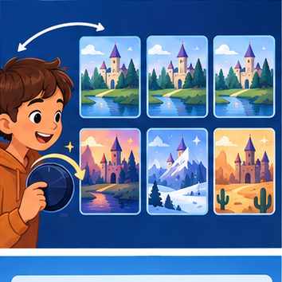
CREATOR MISSION
Compare low- and high-variability story continuations.
Creator name and date:
Readiness for the connected explanation
Does the largest next-token probability guarantee the largest complete-path probability?
Readiness for A small attention calculation
What must happen to permitted weights after excluding a position?
This week’s end goal
By the end, I can calculate a toy temperature change and trace a sampling draw.
Student lesson · 2 of 16
Notice the evidence
PICTURE STORY
Notice → Predict → Explain
Begin with visible evidence. Do not explain more than the picture and information support.
MYSTERY
The learners must use sampling and variability to solve a problem. What information do they have? What decision or calculation do they make? What would count as evidence that it worked?
Three observations (what you can point to):
My prediction and the clue supporting it:
A closer explanation
Start with probabilities red 0.6, blue 0.3, green 0.1 in that fixed order. Greedy chooses red. Sampling uses a draw u with 0 <= u < 1 and cumulative intervals: red [0,0.6), blue [0.6,0.9), green [0.9,1). Left endpoints are included, right endpoints excluded. Thus u=0.6 selects blue and u=0.9 selects green. The draw 1 is outside this contract.
Sampling does not mean choosing all tokens equally. Across many independent draws the frequencies may approach the specified probabilities, but a small sample need not match them exactly. Fixed recorded draws allow a reproducible classroom trace. A random seed and generator version help replay a real sampling program, not establish the truth of outputs.
Apply the connected idea: A small attention calculation
For one query q and keys k_i of width d, compute score s_i = dot(q,k_i)/sqrt(d). Then obtain weights from softmax and combine value vectors. Dot products may be negative; probabilities cannot. The softmax performs the conversion. This is a single-head classroom calculation, not a full language model.
Define softmax weights as exp(s_i-m)/sum_j exp(s_j-m), where m is the maximum permitted score. Subtracting the same maximum from every permitted score leaves the ratios unchanged and avoids unnecessary overflow from large positive scores. Natural exponent exp is introduced here; use a calculator or Python math.exp rather than estimating its meaning from the word exponential.
Student lesson · 3 of 16
See how it works
VISUAL MECHANISM
Input → Process → Output
Trace the information. At each stage, ask what changed and how you could test it.
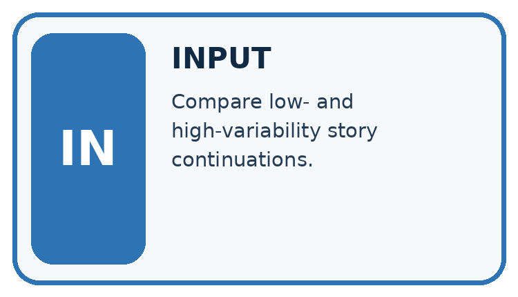
↓
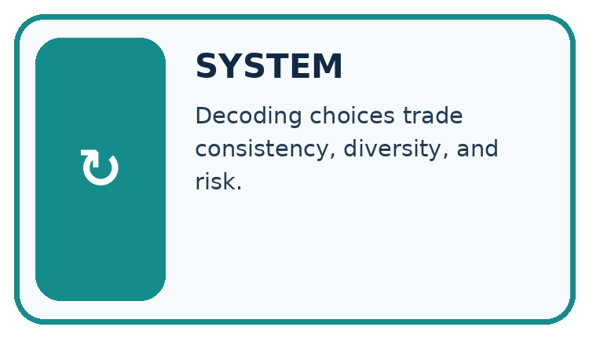
↓
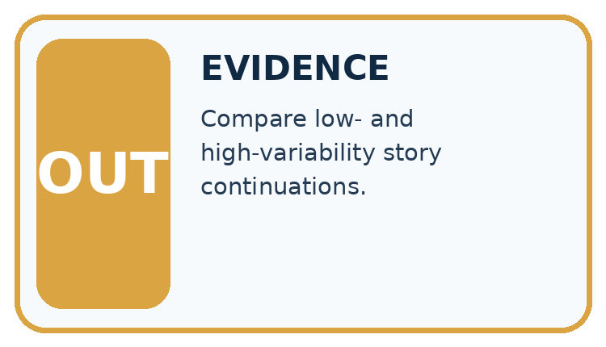
Which stage could fail even when the other two are correct? Explain:
A closer explanation
For strictly positive probabilities p_i and temperature T>0, define q_i = p_i^(1/T) / sum_j p_j^(1/T). This classroom formula is equivalent to scaling logits before a softmax when p came from those logits. We use it directly on the supplied table. At T=1 the distribution is unchanged. At T=0.5, square each probability: 0.36,0.09,0.01; total 0.46. The adjusted distribution is red 18/23, blue 9/46, green 1/46.
| Token | T=1 probability | T=0.5 probability |
|---|---|---|
| red | 0.6 | 18/23 ≈ 0.782609 |
| blue | 0.3 | 9/46 ≈ 0.195652 |
| green | 0.1 | 1/46 ≈ 0.021739 |
Keep the evidence roles separate
Apply the connected idea: A small attention calculation
| Item | Key, width 1 | Value, width 1 |
|---|---|---|
| A | [0] | [2] |
| B | [ln(3)] | [6] |
Take q=[1] and d=1. The scale sqrt(1) is 1, so scores are 0 and ln(3). ln(3) is the number whose natural exponential is 3, approximately 1.098612. Exponentials have ratio 1:3, hence weights 1/4 and 3/4. Output is (1/4)*2 + (3/4)*6 = 5. Using maximum subtraction gives exponentials 1/3 and 1 and the same normalised weights.
Keep the evidence roles separate
Connect the picture and the explanation
Point to the input, the deciding step and the result in this week’s visual. Explain the same step in ordinary words. A picture helps when you can say what each part represents.
Student lesson · 4 of 16
Compare the cases
CASE GALLERY
Four Tests, Four Kinds of Evidence
A system is not understood until it survives more than one comfortable example.


NORMAL CASE: predict and name evidence. BOUNDARY CASE: predict and name evidence.


MISSING INFORMATION: predict and name evidence. TRANSFER CASE: predict and name evidence.
Which case is most likely to reveal a hidden assumption? Why?
Change one thing in the pictured case
Change: Set the draw to 0.97, keeping both distributions.
Prediction: Both temperatures select B.
Reason: 0.97 exceeds both A boundaries, 0.8 and approximately 0.9412.
Student lesson · 5 of 16
Words that unlock the idea
VOCABULARY LAB
Words You Can Use to Reason
A definition matters when you can recognize the idea, use it, and contrast it with a near-miss.
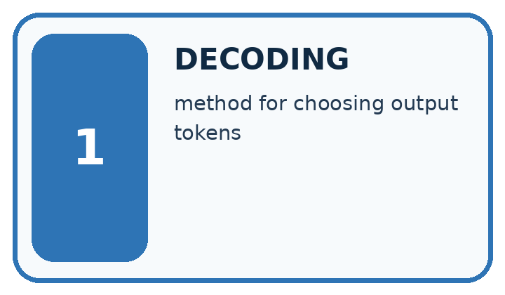
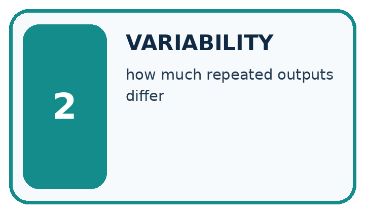
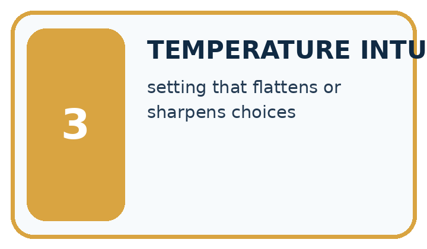
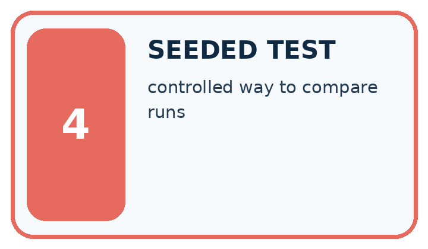
| Word | My own example | Not this / boundary |
|---|---|---|
| decoding | Selecting output tokens from a model's scores using a specified procedure. | |
| variability | Differences observed across repeated runs, samples or conditions. | |
| temperature intuition | A rough understanding of how temperature rescales token scores: higher values commonly spread choices more, without guaranteeing creativity or truth. | |
| seeded test | A test containing a deliberately planted, known condition or error to check whether it is handled. |
Words used in the closer explanation
| Word | Meaning |
|---|---|
| Sampling | Selecting an alternative using a specified random procedure |
| Greedy choice | Selecting an alternative with largest next-token probability under a tie rule |
| Temperature | A positive parameter that changes the concentration of a distribution under a stated transformation |
| Cumulative interval | A range of draws assigned to an alternative using accumulated probability mass |
Terms for A small attention calculation
| Term | Meaning |
|---|---|
| Scaled dot product | A query-key dot product divided by the square root of key width |
| Softmax | Exponentiating scores and normalising their sum to obtain weights |
| Score | An unnormalised compatibility value before softmax |
| Numerical stability | An implementation choice that avoids avoidable arithmetic overflow or loss |
Student lesson · 6 of 16
Follow a worked example
WORKED EVIDENCE
Reason Step by Step
Predict first. Then check each step. A correct answer without visible reasoning is incomplete evidence.
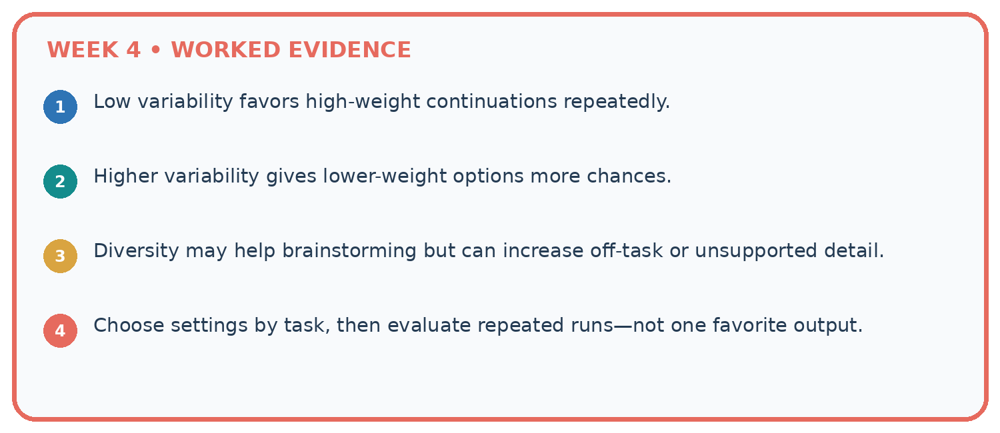
1. Low variability favors high-weight continuations repeatedly.
2. Higher variability gives lower-weight options more chances.
3. Diversity may help brainstorming but can increase off-task or unsupported detail.
4. Choose settings by task, then evaluate repeated runs—not one favorite output.
Recalculate, retrace, or restate the reasoning in your own representation:
CHECK Did the evidence answer the exact question? Did the total, path, or source record stay consistent?
A closer explanation
The lower positive temperature concentrates this table on its largest entry. For T=2, use square roots before normalising; this flattens this unequal distribution. These changes leave the order of positive probabilities unchanged, so greedy still selects red. They change the sampling distribution, not the factual evidence behind a generated claim.
Our formula excludes T=0; dividing by zero is undefined. Some systems offer a zero-temperature setting as a separate greedy policy, but that is not a value to substitute into this formula. We also avoid claiming that any one setting removes all nondeterminism in an unspecified system.
Apply the connected idea: A small attention calculation
For q=[1,1], kA=[1,0] and kB=[0,1], both dot products are 1. Divide by sqrt(2); equal scores give equal weights 1/2 regardless of their common value. With values [2,0] and [0,4], the output is [1,2]. Do not omit the scale merely because it cancels in this tied example; unequal scores generally change concentration when scaled.
Apply masks before normalising over permitted scores. In the width-one example, excluding B leaves weight 1 for A and output 2. A key with the wrong width violates the dot-product contract. Values must share a width with one another, but their width need not equal the query/key width. An all-excluded mask is handled explicitly instead of taking a maximum of an empty list.
Learn from the worked case
Cover the result before checking it. Say what is given, choose the procedure, and follow one step at a time. Then uncover the result and explain your first mismatch. Ask why a step is allowed, not only what number it produces.
A pictorial worked case: Sampling and Variability
A fictional two-token distribution illustrates variability in generation.
The facts we will use
At T=1, A=0.8 and B=0.2. For positive T use p^(1/T), then normalise.
Use token order A,B and cumulative intervals [0,boundary),[boundary,1). Draw u=0.85.


Read the picture one step at a time
Why this result follows
Lower positive temperature concentrates this unequal distribution on its larger entry. It changes sampling probabilities, not evidence for whether A or B is true. Using the same draw isolates how the distribution changes the decision. This formula is a toy probability-space illustration corresponding to a temperature-scaled model distribution.
What this example does not establish
Two tokens and one draw do not predict every output; temperature alone does not solve hallucinations.
Read the labelled picture: Does T=0.5 make B impossible, and does choosing A guarantee factual accuracy?
Change one thing: Set the draw to 0.97, keeping both distributions. Predict the result before checking the explanation. What remains the same?
Student lesson · 7 of 16
Find and repair a mistake
ERROR DETECTIVE
Compare → Diagnose → Repair
Do not patch the answer. Find the earliest unsupported assumption, wrong step, or weak evidence.
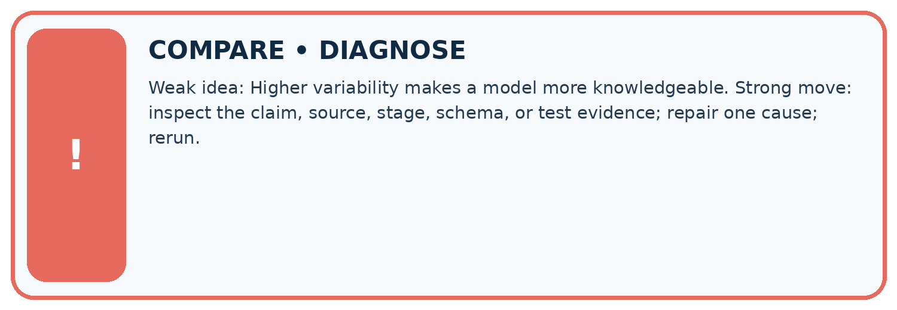
| Evidence record | Expected | Actual | Likely cause / next test |
|---|---|---|---|
| normal case | works | ||
| boundary case | stated rule | ||
| missing input | safe response | ||
| fresh transfer | generalizes |
Repair one cause. Why is this repair better than changing several things?
A closer explanation
A fair temperature comparison fixes the prefix, model distribution, candidate order and draw policy. Record multiple outcomes and evaluate task criteria separately. If the aim is creativity in fiction, variation may be useful; if the aim is reporting a sensor state, every factual claim still needs evidence. Never call a probability-concentration change an accuracy improvement without an appropriate evaluation.
Apply the connected idea: A small attention calculation
Check query/key dimensions, scale, permitted positions, finite scores, stable normalisation, weight sum and value widths in that order. A zero output can result from values cancelling; it does not imply zero attention weights. Record enough intermediate values for someone else to reproduce the trace.
Student lesson · 8 of 16
Practise together
LOGIC STUDIO
Specify Before You Run
Prompts, schemas, retrieval, tool calls, and code are inspectable parts of one AI product.

SET task, audience, constraints, output_schema LOAD approved_context or retrieval_result CALL model or allowed_tool VALIDATE fields, claims, citations, and safety IF evidence missing: ask, retrieve, or abstain RETURN useful output + source trail + limitations
Trace one input. Which line changes the state or chooses a path?
A closer explanation
Supported draws 0.2,0.6,0.9 at T=1 select red, blue, green. At T=0.5, 0.2 and 0.6 fall below 18/23 and select red; 0.9 lies between 18/23 and 45/46 and selects blue. Keep exact fractions for boundaries, because rounding can misclassify a draw near an endpoint.
Apply the connected idea: A small attention calculation
Supported scores 1000 and 1000+ln(3) would overflow an ordinary direct exponential calculation in many floating-point implementations. Maximum subtraction gives -ln(3) and 0, producing weights 1/4 and 3/4. Their common shift does not change the relative weights. This is a stability mechanism, not evidence about source correctness.
Practise with less help: Compute the adjusted table
Use workbook W2 for the connected example “Sampling and temperature”. First fill the input and rule boxes. Try the middle steps before asking for a hint. After a hint, try the next step yourself.
| Plan | Do | Check |
|---|---|---|
| What is given? Which rule or procedure applies? | Record each intermediate step. | Does the result follow? What remains unknown? |
Explain your trace to a partner. Your partner points to one step to check. Swap roles on the next case. Each person writes their own explanation.
Check your reasoning
Use the worked case for Sampling and temperature. Proposed explanation: “Sampling means equal chances”. Decide whether this explanation is supported. Point to the step or supplied fact that decides; explain your repair if needed.
Answer on your own before discussion. If you are unsure, say which step you need help with.
Practise the connected topic: A small attention calculation
Use its named workbook W2. Identify the given inputs, try the middle steps with less help, then explain your trace. Check this claim before group discussion: Scores already are probabilities
Explain the picture
Does T=0.5 make B impossible, and does choosing A guarantee factual accuracy?
This is supported practice. Keep the separately named independent case for an attempt before feedback.
Student lesson · 9 of 16
Run the investigation
EVIDENCE LAB
Predict → Test → Record → Explain
Keep expected and actual results separate. Surprises are useful data when recorded honestly.
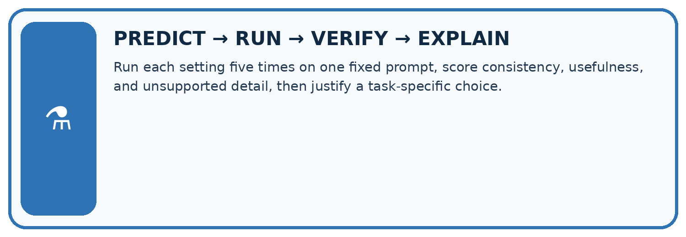
Run each setting five times on one fixed prompt, score consistency, usefulness, and unsupported detail, then justify a task-specific choice.
| Test / input | Prediction | Actual | Evidence / calculation | Change or keep? |
|---|---|---|---|---|
| normal | ||||
| boundary | ||||
| missing | ||||
| fresh transfer |
What did the hardest test teach you that the normal test did not?
Plan → try → check
Before trying: what do I expect, and why? While trying: which step could first go wrong? Afterwards: what did I actually observe, and what should change? Keep “not run” if you only traced the procedure.
Student lesson · 10 of 16
Build your understanding
MASTERY
From Knowing the Word to Owning the Idea
Move upward only when you can produce evidence without copying the worked example.

1 • NAME: Define the concept without repeating the textbook.
2 • TRACE: Show the information, state, branch, calculation, or evidence path.
3 • APPLY: Solve a different example independently.
4 • CHALLENGE: Find a boundary case, counterexample, or unfair outcome.
5 • EXPLAIN LIMITS: Say when the result should not be trusted or used alone.
My strongest evidence of independent understanding:
Student lesson · 11 of 16
Connect your project
CUMULATIVE PROJECT
Verified Study Buddy
Every week adds one inspectable piece. The system must show how it reached a result.
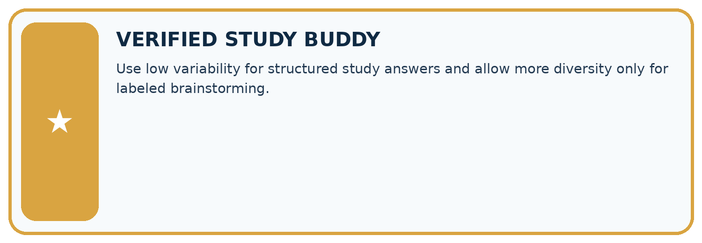
THIS WEEK’S CHECKPOINT Use low variability for structured study answers and allow more diversity only for labeled brainstorming.
SYSTEM MAP Learner need → prompt/schema → approved sources/retrieval → model/tool → structured answer → verification → human decision
What will you add, change, or verify in the project this week?
What should remain under human control?
RESPONSIBLE DESIGN Collect only necessary information. Show uncertainty and limits. Never confuse fluent output with verified truth.
Evidence for your project
Keep Study Buddy generation settings fixed during prompt comparisons and check evidence regardless of variability.
Student lesson · 12 of 16
Show what you know
INDEPENDENT MASTERY PROOF
Explain • Transfer • Test • Defend
Complete this page without copying the worked example. Your reasoning matters more than decoration.
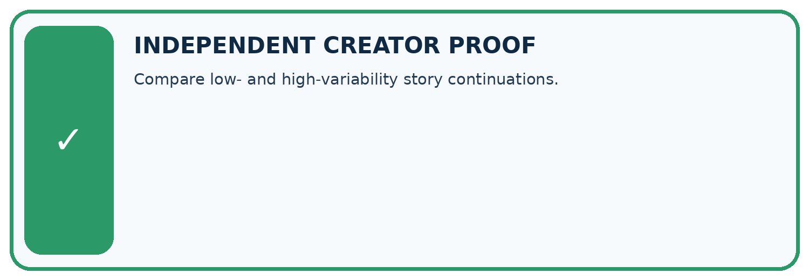
CHALLENGE Compare low- and high-variability story continuations.
1. My fresh example, trace, calculation, or design:
2. My evidence that it works (include a boundary or missing-data case):
3. One limitation, fairness concern, or situation needing human review:
SELF-CHECK □ I explained the mechanism □ I used evidence □ I tested a fresh case □ I named a limitation □ I can answer ‘why?’
Student lesson · 13 of 16
Study a complete case
Week 4 Worked case
Use the supplied details to practise the weekly concept before attempting the independent question. This case extends the illustrated lesson.
The situation
One prompt produces three different valid quiz questions.
The question
Does variability mean failure?
Worked explanation
No. Sampling can vary outputs. Score correctness, relevance and format over repeated trials; consistency differs from quality.
Explain it in your own words
Which detail supports the answer, and why does it matter?
Trace the supplied case visually
Variability and quality are separate
| Evidence or stage | Value or result |
|---|---|
| Trial A | Different valid quiz question |
| Trial B | Another valid quiz question |
| Trial C | Check correctness, relevance and format |
One prompt produces three different valid quiz questions.
Does variability mean failure?
No. Sampling can vary outputs. Score correctness, relevance and format over repeated trials; consistency differs from quality.
Student lesson · 14 of 16
Try a new case independently
Independent case: Sample a new table independently
Probabilities A=0.5,B=0.3,C=0.2 in that order. Compute T=0.5 probabilities and cumulative boundaries. Trace u=0.5 and u=0.9 under T=1 and T=0.5. Explain the limit of the comparison.
Attempt this case before feedback. Record any help. Earlier examples below are further practice; a case already practised with feedback cannot establish fresh transfer.
Week 4 Independent application
Close the worked explanation. Apply the idea to this different question without copying.
Prompt A is run three times and returns three different stories. Does this alone prove the prompt changed? Describe a fair comparison of two prompts.
My answer, with a trace, calculation or supporting evidence
Create and test
Change one relevant detail. Predict the result before testing. Include a boundary or missing-information case when it helps reveal a limit.
My changed input and expected result
Connect to your project
Use low variability for structured study answers and allow more diversity only for labeled brainstorming.
The evidence I will keep
Your teacher has the independent answer and scoring criteria. Complete the matching workbook week to keep your practice evidence together.
Transfer practice from the original programme
Prompt A gives three identical wrong answers. Prompt B gives two correct answers and one wrong answer. Compare consistency and correctness without declaring either generally superior.
Use feedback to improve
Attempt the independent case before hints. Record whether you worked alone, used a hint or followed a model. After feedback, fix the first unsupported step and explain why it changed. A later check uses a changed case, not a copied answer.
Student lesson · 15 of 16
Your lesson route
Start with this question: A fictional two-token distribution illustrates variability in generation.
| By the end, I can | How I will show it |
|---|---|
| Sample from a distribution using explicit cumulative intervals | Explain the deciding step, show a trace or test, and state one limit. |
| Calculate temperature-adjusted probabilities for a toy example | Explain the deciding step, show a trace or test, and state one limit. |
| Explain why random variation and factual reliability need separate evaluation | Explain the deciding step, show a trace or test, and state one limit. |
Remember → watch and explain → try with help → investigate → try independently → keep project evidence. Your teacher may spread this lesson across several classes.
Keep your first prediction. Compare it with what the evidence shows and explain any change.
Student lesson · 16 of 16
Finish and return
Close your notes. Explain this goal in your own words: Sample from a distribution using explicit cumulative intervals
If you are unsure, return to the worked picture and explain one arrow. If you are ready, change an input or assumption and justify your prediction.
Save your workbook evidence. At the next review, try a different case before opening your old answer.